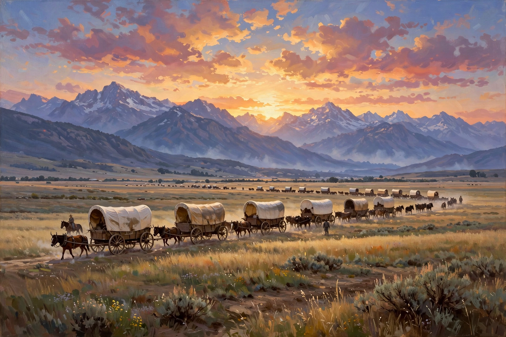

The American frontier, also known as the Old West or the Wild West, encompasses the geography, history, folklore and culture associated with the westward expansion of the United States, from the colonial era to the early 20th century. Beginning with English colonial settlement in the early 17th century, the frontier moved steadily westward through the Louisiana Purchase (1803), the annexation of Texas, the Oregon Trail migrations, the Mexican Cession and the California Gold Rush.

Successive waves of trappers, miners, farmers and ranchers pushed into lands long inhabited by Native American peoples, whose displacement — through war, disease and forced removal such as the Trail of Tears — is inseparable from the frontier story. The Homestead Act of 1862 offered 160 acres to settlers, and the transcontinental railroad (1869) tied the West to national markets. Cow towns, cattle drives, mining booms and outlaws such as Billy the Kid and Jesse James entered American mythology.
The 1890 census declared the frontier line effectively dissolved, prompting Frederick Jackson Turner to deliver his influential 1893 "Frontier Thesis", arguing that the frontier had shaped American democracy, individualism and national character. The 1890 massacre at Wounded Knee marked the end of large-scale armed resistance by Plains tribes.
The frontier lives on in Western films, novels and folklore — Buffalo Bill's Wild West shows, the gunfighter myth, and the imagery of cowboys, sheriffs and boomtowns — while modern scholarship stresses the frontier's violence, diversity and environmental cost.
See also: Manifest destiny · Frontier thesis · Western (genre)